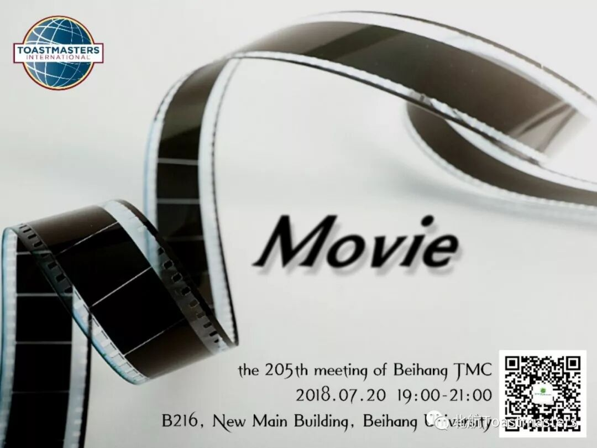
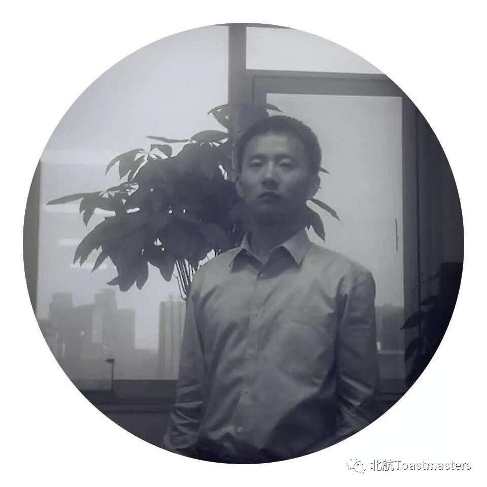
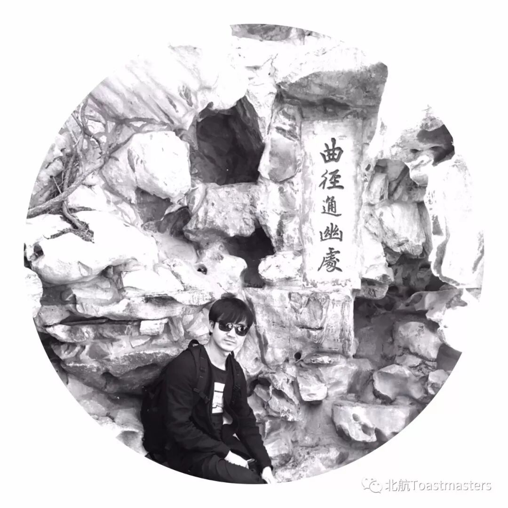
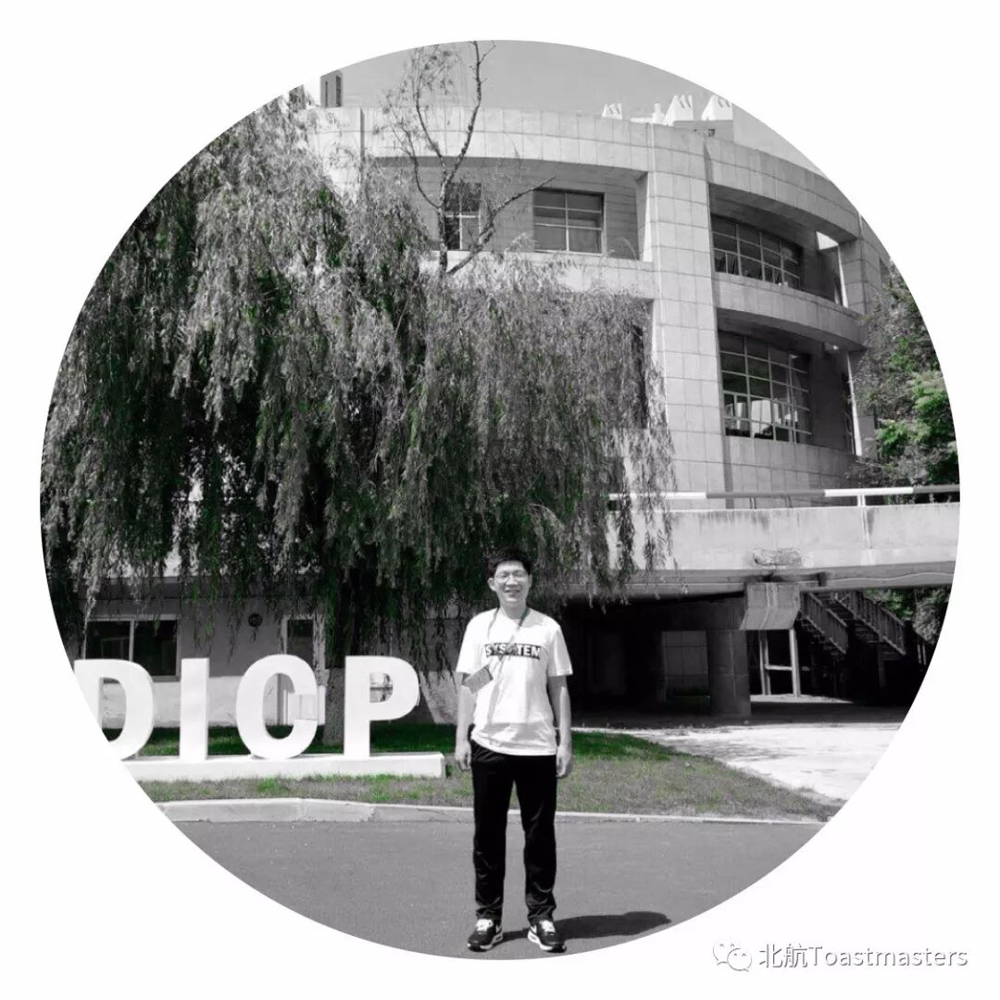
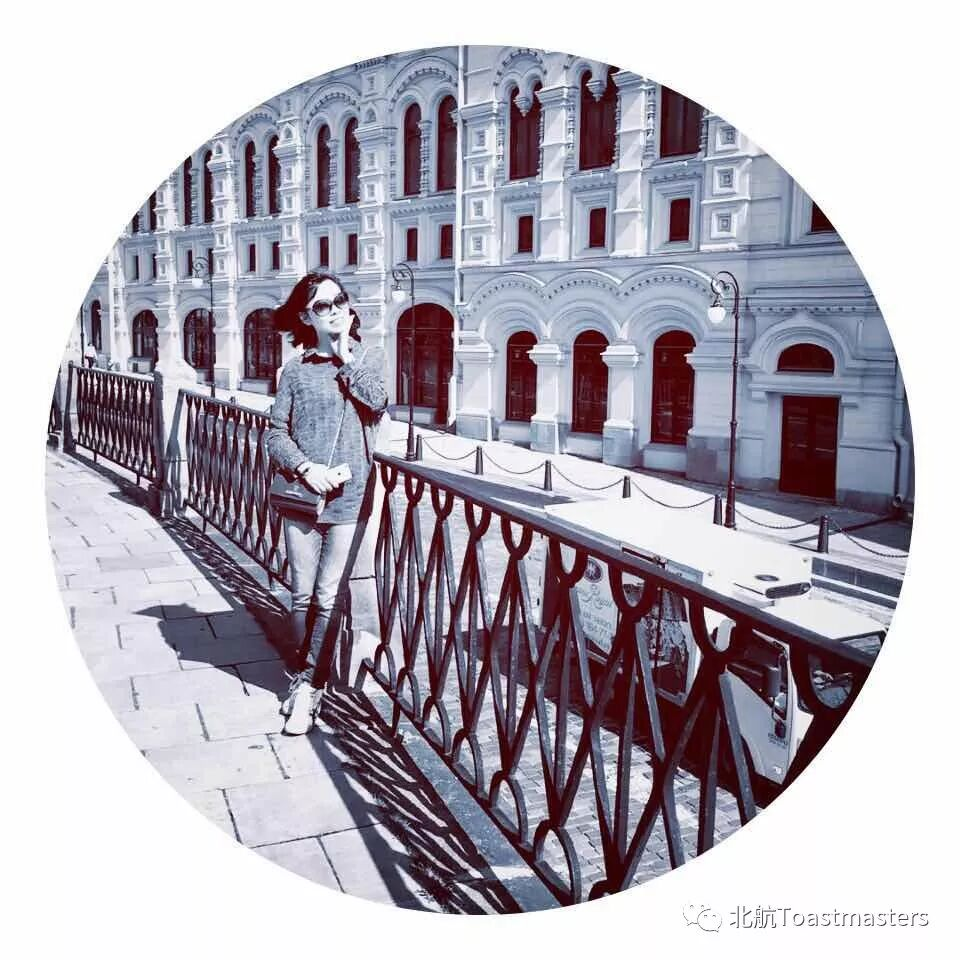
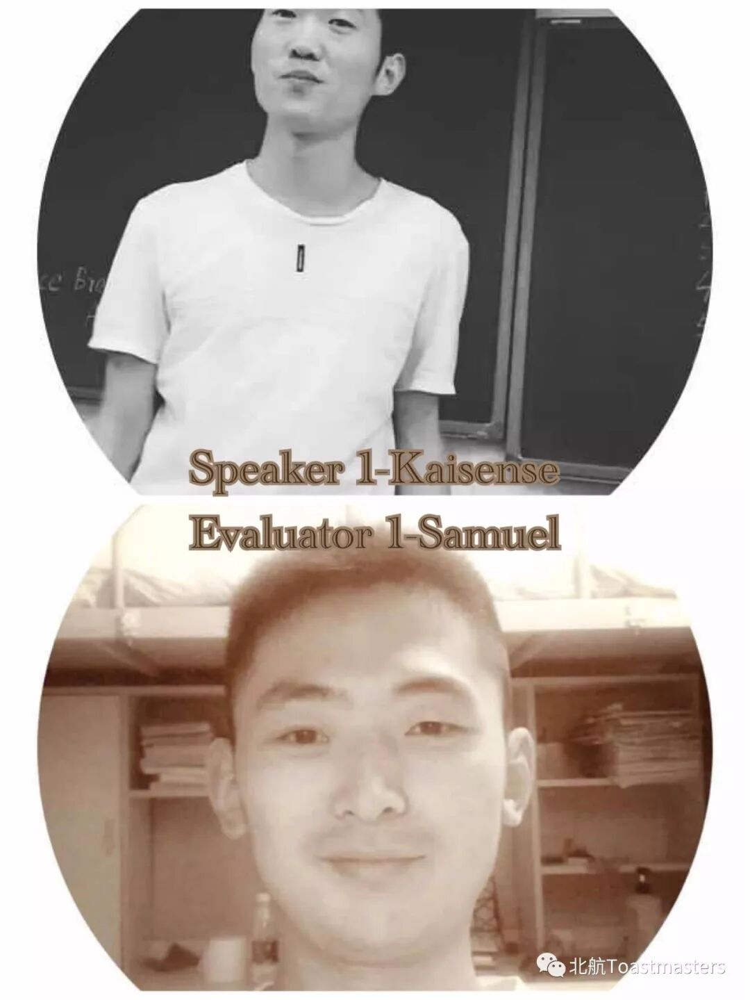
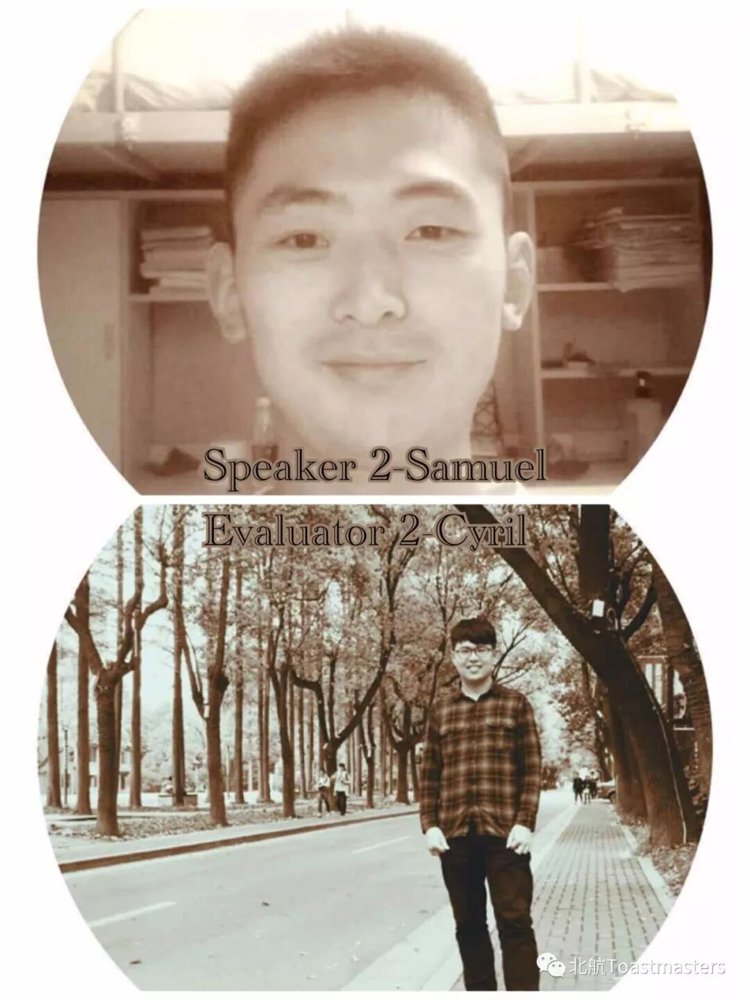
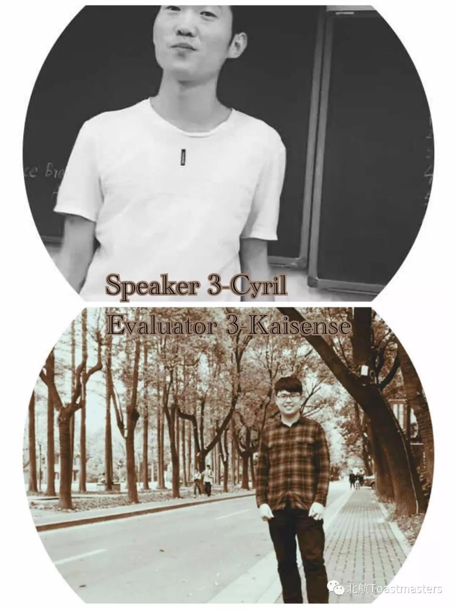
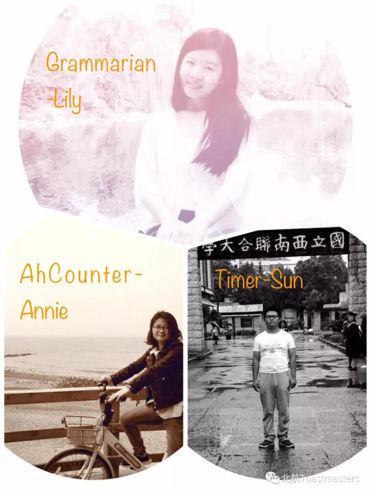

Senior Roles

TM-Allen

GE-Michael

TTM-Michael Li

TTE-Claire
Prepared Speech



Minor Roles

Training-Blair
How to Make the Prepared Speaking
Quizmaster- Danni

Time: 19:00-21:00, Friday, 20th July
Venue: Room B216, New Main Building, Beihang University
BeihangToastmasters Club is a students' union. At the same time, we belong to a non-profit international organization calledToastmasters International.
Toastmasters International (TI) is a non-profit educational organization that operates clubs worldwide for the purpose of helping members improve their communication, public speaking, and leadership skills.You can find us by the following map of Beihang University.

原文链接（公众号关闭后可能失效）：
https://mp.weixin.qq.com/s/GEz6PoPEHvwJWwmUPL1njw
https://mp.weixin.qq.com/s/GEz6PoPEHvwJWwmUPL1njw
第 481/539 篇 · 北航Toastmasters英文演讲俱乐部公众号存档
本页为抢救式本地归档，图文已永久保存。
本页为抢救式本地归档，图文已永久保存。